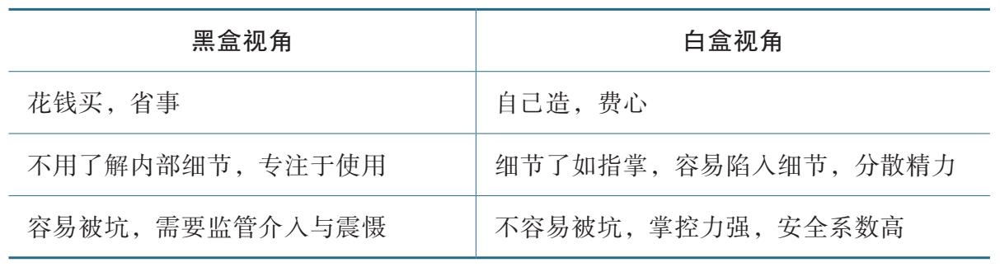

大凡治事，必需通观全局，不可执一而论。
——钱泳
职场上有两种人。一种人做事周全而缜密，提交的方案、执行的过程、拿到的结果几乎都挑不出毛病，充分考虑了各种细节，关键节点有提醒，重要环节有把控。与这样的人合作，简直如沐春风，高效又有产出。
另外一种人做事丢三落四，瞻前顾后，临近最后时限才匆匆忙忙开始，一提醒才想到，不提醒就忘掉，平时拼命加班，就是不见成果。与这样的人合作，提心吊胆，就怕合作被坑，辛苦又内耗。
如果你仔细分析这两种人的思维模式，就会发现一个重要的差别：系统思维。
系统是由多个要素共同构成，各要素相互作用、相互依赖，形成了一个复杂的整体。理解系统要抓住以下三个关键。
1. 系统的组成要素
如果我们把系统拆开，就可以看到各个不同的组成要素，识别这些不同的要素就是理解系统的第一步。要素既可以是有形的，也可以是无形的。如果把球队当成一个系统，那么教练、队员、后勤保障人员等就是重要的组成部分，球队的声誉、球队的能力也是不可缺少的组成部分。简单地拆解系统要素，依靠生活常识就能做到，但如果要拆解得全面且完整，就需要通过专门的训练提升。
2. 各要素之间的关系
系统内部的各个组成要素不是孤立存在的，而是相互之间有连接、有关系、有互动。这种互动会让系统涌现新的特性，形成整体大于部分之和的效果。一支球队的成绩好不好，不仅取决于每个队员的水平高不高，还要看全体队员的合作意识强不强。如果一支球队的团队合作意识很差，那么我们就会说这支队伍是一盘散沙。
3. 系统与外部环境的关系
一个系统往往会处在一个更大的环境中，最终要达成某个目标，或者实现某种功能，这就是系统与外部环境的关系。围绕这个目标，系统内部各个要素发挥作用，各司其职，最终完成整个系统的使命。不同的系统目标，会带来不同的系统行为。同时，只要系统不是完全封闭的，就必然与外界环境有互动、有输入、有输出，就像一支球队必然会有队员的加入和离开。
系统思维是一种思考问题的角度和方法，是指我们在思考问题时，要能借助系统的概念来引导自己的思维，对问题进行全面分析。
1. 学会主动把不同的生活问题当成系统来看
很多人学了系统思维后，没有在生活中主动运用，不会主动把自己的所见所闻当成系统来思考，自然就感受不到系统思维的强大力量。只要处处留心，你就会发现生活中到处都有系统。
我们每天去上班，所在的单位就是一个系统。领导给你布置了一项重要工作，这也是一个系统。下班回家需要乘坐公交车或地铁，城市的公共交通就是一个系统。回到家后取快递，又遇到一个系统。吃完饭打开短视频App，这还是一个系统。
当你在生活中刻意使用所学的理念来观察与思考后，你的学习效率就会高很多。
2. 关注系统的组成要素，以及要素相互之间的关系
看到系统后，我们就可以拆解系统的组成要素，思考各个要素是如何通过互动让系统运行起来的。我们可以先想想，自己上班的公司是如何运行的？公司由哪些部门组成？每个部门分别负责什么？有什么样的生产流程？哪些赚钱，哪些不赚钱？
我们坐上地铁后，也可以想一下，一座城市的地铁系统是由哪些部分组成的？地铁站要如何修建？线路要如何修建？一条地铁线路要有多少辆地铁运行？一辆地铁要配多少节车厢？怎样才能确保地铁平稳运行？高峰期与平峰期要如何调度？
充分考虑到系统的各个要素，我们的思考就会更周全、做事也更稳妥。
3. 关注系统与外在环境的相互关系
我们思考完系统内部的事项后，还要看一看系统和外在环境的关系，这是一个跳出来看、提升格局的过程。
一方面，我们要思考这个系统的目标是什么；另一方面，也要看到系统的输入和输出有什么。在工作中，每个人不仅要思考自己所做的工作，需要与谁合作、依靠谁的产出、要为谁服务，还要思考自己在整个部门甚至整个公司所发挥的作用，这样才能更清晰地意识到自己工作的重点，合理分配精力。同样地，一座城市的地铁线路如何建设，也要考虑这座城市的人口分布、发展战略、百姓的出行需求等，这样才能高效地提升城市的交通效率。
我们在学习和生活中，可以经常使用系统思维来思考和决策。这样不仅能把握事情的本质，提升做事的准确率，还能避免思考上的缺项漏项。
如果写一本书，参考系统思维的三个关键点，我会思考这些问题：首先，这本书主要有哪些内容？需要包含多少个章节？其次，各个章节的逻辑顺序是什么？每个章节具体要包括哪些内容？最后，目前市面上的同类书有哪些？这本书能解决哪些问题，可以满足读者什么需求？回答好这些问题，能够避免写作过程中的自说自话行为，让写作更有成效。
如果想做自媒体，也可以运用系统思维。首先，要思考账号作为一个系统，要有什么定位、向读者传递什么样的理念、准备如何变现，这就是系统和环境的关系。其次，要思考组成系统的各个要素，包括账号的名称、头像、介绍、内容以及运营模式等。最后，还要思考账号发布的每一条内容之间需要有什么样的关系，如何更好地支撑账号的整体格调。
通过上面两个案例，你会发现，当你掌握了系统思维后，在思考问题时遵循三个关键原则，就不会两眼一黑，不知道如何下手，也能避免只看表面，无法深入的情况。你甚至还可以不断细化，每一个系统的要素可以再当成一个系统，继续拆解成更多的组成部分，依次重复分析，抽丝剥茧。
初学系统思维的人，往往会因为一件事情感到困惑：在拆解系统构成要素时，把握不准拆解的力度。要么拆出来很大的要素，不能充分反映系统的构成；要么拆得过细，跨越了多个层次，以至于影响后续的思考和分析。
这说明了系统的一个特点：层层嵌套。正因为系统思维本质上是一种认知视角，所以组成系统的要素可以再单独形成一个系统，继续往下分解，拆出更小的要素，这就是系统的嵌套能力。在层层嵌套的系统中，我们可以梳理出理解世界的规律。
请参考以下名词：
粒子、原子、分子、细胞、器官、生物体、群体、组织、社会、跨境组织、行星、太阳系、星系
从左往右，我们会发现，每个词都可以作为要素构成右边的系统。从最小的肉眼不可见的粒子，到浩瀚的宇宙星系，通过层层嵌套，我们可以把整个世界从微观到宏观贯穿起来。
由此我们能够得出以下两个结论。
1. 自然界和社会的复杂性随着嵌套层次的增加而逐步增加
不同层级之间存在紧密的相互作用和依赖关系。每一个上层系统的稳定运行与功能的发挥都依赖于下一层系统的正常运转。小到细胞的活动、大脑的运行、我们的工作和生活，大到社会的运转、国家的发展、天体的运动，都处在层级体系中的某一个层面。这些系统共同工作，构成了我们看到的世界。
2. 在拆解问题时，为了让思考专注，尽量在同一层次探讨和分析
理论上，任何对象都可以利用系统思维进行拆解，并且循环往复。实际上，过度的拆解跨越太多的嵌套层次，会让思考无法聚焦。
如果我们运用系统思维思考人际关系，就会重点关注人际关系中的个体、交流互动、人与人的边界、目标与价值观等要素。但是如果你把人际关系拆解至电子的运动方式，并且讨论波粒二象性，就跑偏了。这两件事情从系统层层嵌套的角度，固然可以建立关联，但是在有限的时间和精力下，两个议题跨越了过多的嵌套层次，它们的相互影响微乎其微。拥有好的人际关系的一个重要原则，就是知道对方在关注什么话题，并且愿意与其在相同的层次上交流和讨论。
我们在拆解问题时，要注意当前的问题是处在哪个层次。每一个层次的问题，最多受到上下相邻的两个层次的影响，当跨越层次过多后，这种影响就会变得非常微弱。如果强行跨越多层嵌套进行干预和影响，那么往往会出现预期之外的现象。
俗话说：“县官不如现管。”在一个多层级的组织体系中，处于权力高位的老板和处于权力低位的基层员工之间隔了许多层嵌套关系。也正因为如此，如果保安不认识公司老板，那么老板对保安的权力，其实还不如保安队长的权力大。我们在小品里经常能看到这样的故事情节：保安不认识新上任的老板，直接将其拦在门口，最后接到保安队长的通知后才将其放行；老板如果想让保安开门，最快的方法是找分管行政的高管下属或办公室主任。
在职场上，很多员工会认为自家公司老板为人和善，每天都是笑呵呵地与大家打招呼，而自己的直属上级却脾气不好，很难相处。这可能是一种偏见。公司老板对基层员工和蔼友善，未必是因为老板性格本身，而是一种最优的职场生存策略。
老板的管理权力不会直接影响到基层员工，而是通过管理层一级一级向下，如果老板想处理一名员工，只要让自己的高管去找下属层层处理就行。因此，老板的最优策略是对基层员工和蔼可亲、没有架子，但是可以在会议室批评高管。公司高管受到老板的直接指挥，每天要落实并且汇报工作，所以他们才知道老板最真实的样子。
一旦理解了系统思维，我们就可以在读书和学习的过程中快速识别他人在表达中使用的系统思维。
《大脑的未来》一书这样介绍我们思想和行动产生的过程：
要构成一个复杂系统，神经元必须是半自主的，每个神经元与其他多个神经元存在微弱的相互作用，并且表现出非线性的输入、输出关系。这是一种开放系统，通过细胞水平之上的集群活动形成全局模式。神经元不再单独活动，而是参与到群体当中，重要的不再是单个细胞而是群体的活动……思想和行动相关的脑过程产生于一层套一层的层级结构中，这种大量神经元的群体性质代表了这些层级中新的一层。
如果你掌握了系统思维，那么很快就能理解这段话的核心含义：作者把大脑比作系统，组成该系统的要素是神经元，神经元的相互关系是参与到集群中的共同活动，这种活动产生了人的思想与行动，也是大脑这个系统的目标。这里要重点关注，神经元细胞水平的活动并没有进一步向下拆解到细胞内部，也没有跨越多个嵌套层次。
运用系统思维，我们可以快速提升自己的思考质量，让思考更加成熟和稳健。这样，我们做事情的成功概率也会提高，因为抓住了事情的本质。如果我们把系统思维和个人成长结合起来思考，就会获得更加令人惊叹的效果。在开启有关个人成长的系统思维之前，我们先来探讨几个系统与力的话题。
当我们建立了系统思维的习惯后，我们会发现生活中系统无处不在。接下来的问题就是，如何判断一个系统的好坏。有一个很简单的方法就是，看这个系统在关键时能不能出“力”。
力是一个矢量，具备大小和方向。当我们描述一个力时，不仅要说明这个力有多大，还要说明这个力是朝哪一个方向，二者缺一不可。你可以简单地理解为：力是一种推或拉的行为。
在人生突破的四个关键要素里，突破局部的关键就是要靠“力”。当我们给自己施加一个向上生长的力量时，我们就开始突破局部了。
系统最大的价值之一就是对外输出力。力是现代工业文明的基础。我们当前享受的现代文明，就源于人类社会找到了系统性的方法，能够获得持续稳定的力。
在农业社会，生产需要依靠人的劳动所产生的力。人力最大的特点是不稳定、不连续。人在田间劳作，太阳暴晒、温度过高、蚊虫叮咬、出汗缺水等因素都会让人无法持续工作。与此同时，一旦生产的过程过于复杂，消耗的人力与时间也会大幅增长。由于缺乏持续稳定的力，人类经历过上万年的农业社会，生产力也没有得到充分的发展。
直到18世纪下半叶，第一次工业革命出现，瓦特改良了蒸汽机，人类终于找到了一种稳定输出力量的方式。借助这种稳定的力量，人类能够实现机械化大生产。社会的生产力水平提高，大量商品快速流通，人们的生活质量提升，经济不断发展。我们现在坐着飞机、乘着高铁、开着汽车，快速跨越城市，四处旅游，本质上是由发动机提供稳定的力，驱动引擎工作，代替双腿步行，让我们完成了空间的移动。人类跨地区交流和沟通的速度比以往大大加快，又进一步促进了社会经济的增长。随着人类驾驭和使用力的能力不断提升，人类甚至能够脱离地球引力的束缚，探索月球、火星甚至更深远的宇宙。
作为一个集体，人类整体的进化速度远快于个体的进化速度。
在个人层面，很多人还处在农业社会的阶段，没有获得稳定的成长力量的方法。在从小到大的学习过程中，很多人既没有形成良好的学习习惯，也缺乏长期稳定的动力。成年后，很多人走上工作岗位，想要自我改变，追求成长，却常常因为后劲不足，半途而废。造成这种现象的根本原因是，我们没有利用系统思维去思考自己需要构建怎样的个人成长系统，以此稳定地获得进步的力量，让自己持续成长。当在生活中遇到的困难阻力大于我们前进的动力时，我们就会停滞不前，困在原地。
力包括大小和方向，所以我们在思考时要同时注意这两个方面。有时我们的内心充满力量，但由于缺乏有效的统筹和管理方法，把握不住力的方向，内心不同的力量相互拉扯，最终相互抵消，我们只能原地踏步。现代人纠结内耗的本质就是心中的力太多太乱。解决这个问题的方法就是把力的方向调整一致。劲往一处使，心往一处想，这样相互抵消就会减少，人就获得了成长加速度。
一旦形成系统，我们就能够输出稳定的力，哪怕一开始的力很小，也可以不断积累，慢慢建设一个更大的系统，输出更大的力。如此循环往复，用小机器制造大机器，我们能够使用的力就会越来越强大、越来越稳定。
人类的工业社会就是用这样的方式不断掌握了更加先进的生产力。我们只要想想每天正在使用的电力，就能感受到这种循环往复的强大力量。我记得小时候家里经常会停电，每逢学校上晚自习，我们就特别盼望停电，这样就不用学习了。每到除夕，村里的各家各户都打开电视收看春节联欢晚会，必然要经过一段时间的跳闸才能恢复。如今已经很少遇到停电事件了。
现在人工智能非常火热，其中一个重点的研究方向就是让人工智能能够自主设计出比自己更聪明的智能体。这样，人工智能就能实现自我的迭代和提升，越来越聪明。一旦这个难点被突破，就是一次新的工业革命，人类将获得更高级、更稳定的智力。这种新型的力量，又会引领人类文明新一轮的发展。随着2025年DeepSeek爆火，变革又向我们靠近了一步。
当我们的系统能够持续稳定地输出力时，这种力量也可以反过来用于系统本身的建设和发展。当我们打造了系统，开始持续输出力，哪怕很小，只要不断积累，就能往更好的方向发展。一部分力可以用于支持我们更好地学习、工作和生活，另一部分力可以用于个人成长系统的优化和完善。这样，我们就能变得更好。
系统与力的关系，非常密切。力为系统添砖加瓦，系统给力保驾护航，二者相辅相成，不断强化进步。我们建设更强大的系统，是为了输出更大的力；我们输出了更大的力，又能建设更强大的系统。这就是系统与力的复利式发展。与此同时，二者也有不同的侧重。
1. 建设系统是内功，要花费大量时间，厚积薄发
社会竞争的本质是系统的竞争，比的是谁的系统建设得更好。而系统的建设是慢功夫，不容易一下子出成效。正因为如此，很多人不愿意花时间在系统建设上。如果你能持续做正确的事情，一旦建设好强大的系统，就可以长久地输出力量，由此带来的优势能让你抢占先机，形成竞争壁垒，让竞争对手难以逾越。
京东在起步时就非常重视物流能力，为了打造更好的用户体验，投入大量资金，坚持不懈地构建自己的物流体系。这件事情遇到很大的阻力，许多投资人与同行都不看好。当时的同行为了节约成本，主要采用外包给快递公司的方式发货。最终大家发现，在各大电商平台中，京东的物流是最靠谱的，这也成为京东强大的优势，为其构建了竞争的“护城河”。京东自建了强大的物流系统后，甚至将系统改造成一家新的快递公司，实现了收发快递双向业务，最终独立上市。
在新能源汽车领域，蔚来汽车坚持走换电路线，让电池可充、可换、可升级。在其他同行都只支持充电、不能换电的情况下，它始终坚持在全国各地铺设换电站，加大基础设施投入，支持汽车三分钟满电。这件事情也长期被竞争对手诟病，他们认为这是一桩赔本赚吆喝的买卖。的确，铺设换电站需要投入大量的资金，但是快速换电具备长期的用户价值，并且可以支持电池的持续升级换代。电池与车分离后，还可以参与电网的电力调度。这件事情也正在成为蔚来汽车的核心竞争力。
2. 关键时刻能出力，外人才能看到你的力
相比系统的低调，力更容易被外界看见。力是伶俐的、精准的，是目标导向的。力既可以短期突然爆发，也可以长期持久存在。外界更容易感受到我们的力量，也正因为如此，力是可以经过突击后展现的。在危急时刻，人的身体会大量分泌肾上腺素，从而爆发出惊人的力量，这种爆发力虽然不持久，但往往能让人脱离困境。
力本质上是快速见效的功夫。人们往往会对杰出的事件印象深刻。我们在默默构建系统的同时，也千万不能忽略在某个时刻精准出力。
外在表现出来的力需要背后的支持。有人说，台上一分钟，台下十年功。观众看到的台上一分钟是演员的表现力，台下十年功则是演员打下的专业基础，以及持续打磨的能力系统。我们在电商平台购买商品，上午下单，下午就能收到货，这种快速便捷的送货能力，就需要电商公司构建庞大的物流系统，每天有条不紊地处理上千万甚至上亿件订单，为用户提供稳定的服务。
系统和力是一种思考问题的方式，在日常生活中是非常常见的表达。一旦理解了力和系统的关系，你就能在生活中的很多地方看到它们的影子。讨论系统时，我们未必使用“系统”两个字，我们可能讨论的是“制度”“体系”“体制”“机制”。这些词背后反映的都是系统思维，都可以借用系统的理念来理解。
当我们讨论力时，我们往往会在前面加上各种修饰词，如战斗力、综合国力、公信力、合力、动力、定力、活力、影响力、软实力、感召力、塑造力、创造力、凝聚力、生存力、竞争力、发展力、持续力、同时发力、同向发力、综合发力、创造伟力等。如果你经常阅读各类文件与报告，就会发现各个领域的人们都在使用“构建系统、输出力量”的思考模式来表达。
如果用系统思维来看个人成长，那么这个系统应该由什么要素组成？我看了很多关于成长的思维模型和方法，总结出了两个最简洁的拆解方式。
如果你想实现个人成长，最需要做的两件事情就是学习和行动。我把个人成长系统拆解为学习系统和行动系统。
学习系统输出的是学习力，强大学习力的表现就是这本书的名字——刻意学习。“刻意”两个字，刻画出了学习的本质。
行动系统输出的是行动力，强大行动力的表现，就是我另一本书的名字——持续行动，“持续”两个字，也道出了行动的关键。
学习系统和行动系统是个人成长的双翼，就像一架飞机的两个机翼，只有两个机翼同时发力，我们才能获得个人成长的平稳发展。
我们建立了系统思维后，就可以从黑盒与白盒两个视角来理解系统，也可以借助这两个视角分析各种社会现象。黑盒与白盒的概念最早来自计算机科学中两种不同的软件测试方法。如果你不关心一个系统的组成，只关心系统与外界环境的互动，就是黑盒视角；如果你更关注系统的内部结构与组成元素，就是白盒视角。
当我们开启黑盒视角时，就会更关注如何使用系统提供的功能，但是不关注系统是如何实现功能的。我们去饭店吃饭，不会关心厨师做菜的细节，只会关注菜是否好吃、能不能吃饱。我们去买车，会关注车好不好看、好不好开，但未必了解汽车发动机的原理、驻车制动系统如何工作。这就是经典的黑盒视角。
这时，系统就像一个黑色的盒子，我们看不到里面的内容，但是能用系统提供的功能开展工作。十字路口的红绿灯控制系统自动运行，车辆有条不紊地行驶，交警才能腾出精力处理交通事故。我们利用AI自动处理数据，自己就有更多的时间分析数据，挖掘隐藏信息。
从本质上讲，黑盒视角是用户与市场需求的外行视角。我们可以花钱购买、直接使用他人提供的产品或服务。我们的社会之所以能够高效运行，是因为不同行业的人分别产出自己的工作成果，投放到市场上使用。
正因为我们不清楚黑盒内部的细节，信息不对称，也给坑蒙拐骗留出了空间。每一次出现食品安全问题都会引起社会各界的广泛关注，其本质就是少数不法分子利用这种信息不对称制售假冒伪劣产品，以获得巨额利润。
要想解决这个问题，一是加强监管，把黑盒里的信息呈现出来，让全社会监督，并且对违法违规的行为给予严厉的处罚；二是自己生产，不再从外部购买，全面管控各个流程，这就是白盒视角。
当我们开启白盒视角时，我们不仅会关注系统整体的功能，更关注如何生产和制造出一套系统，并做好营销、运营等全部流程的工作。这时，我们就从外行视角切换成内行视角。
成为内行，就代表我们需要理解底层原理，把握每一处细节，控制每一个流程。白盒视角不仅要关注创造价值的过程，也要关注将价值传递出去的过程。当我们关注某个生产制造的全流程后，久而久之，就会掌握大量该领域内的信息，最终，我们会成为专家，形成自己的竞争优势。
有一句话叫“外行看热闹，内行看门道。”当你变成了内行，你就能够看到其他人看不到的更多地方。这样，你不容易掉入信息不对称的陷阱，但是也要付出更多的心力与代价。
黑盒视角与白盒视角对比表，如表3-1所示。
表3-1 黑盒视角与白盒视角对比表

在这个社会中，每个人都需要依赖他人的工作成果。我们努力学会某个领域的知识，成为专家，在白盒视角下生产服务和产品并将其出售，换来收入；同时，无论是满足个人生活的消费，还是用于自己领域的生产，我们都要花钱购买他人的产品和服务，此时是黑盒视角。
整个人类社会相互协作，形成了一个层次复杂的合作系统，没有人可以脱离社会协作而独自发展。我们总要依靠他人的工作成果，实现自己的个人成长。从这个角度说，无论完全依赖他人的黑盒模式，还是试图完全独立的白盒模式，都是不可行的。
那么，什么时候采用白盒视角，什么时候采用黑盒视角，就是一件非常值得思考的事情。我们可以思考以下案例。
·C国某企业长期购买A国芯片用于制造电子产品，但因为A国和C国出现贸易摩擦，C国遇到芯片长期断供制裁，最后C国企业不得不自行研发芯片并上市。
·过去30年，D国企业把生产线转移到E国，利用人力资源的价格优势，在本土只留存品牌与研发，E国的工业生产能力突飞猛进。
·某项产品长期以来只有F国能生产，因此价格居高不下，G国经多年研发攻坚终于推出了同水平的替代产品，之后F国把价格也调整到了原来的1/10。
·在油车时代，H国为了学习汽车制造技术，用市场换技术，一路追赶；到新能源汽车时代时，H国弯道超车，已经取得全球领先优势。
·某大型垄断企业利用其优势地位，长期依赖乙方提供技术服务外包，久而久之，员工脱离一线实操，只擅长文字报告与PPT制作，公司深陷形式主义与官僚主义，患上了“大公司病”。
·某创业公司租借场地办公，打印机、办公设备也均为租借，以节省成本。后来公司创业成功，利润丰厚，自行购置了一块地，建造了几栋办公大楼。
·某人因为没有时间读书，于是购买了听书服务，每天听他人解读一本书，遇到感兴趣的内容再专门买来纸质书精读。
·某人想要学习大语言模型，但因为自己编程能力较差，利用AI辅导编程，对于自己不理解的知识点，先跳过细节，只把握主要概念，确保代码能使用就行。经过长时间训练，技术能力快速提升。
从以上案例中，我们可以看到，黑盒与白盒作为两种不同的视角，要在不同的阶段，以不同的比例使用它们。但有一个关键点就是，每个人都要为自己的成长负责，只有这样，才能在漫长的时间里抵挡不同的风险。
每个人都在为自己打造个人成长系统。一方面，在白盒视角下，每个人都是自己系统的设计者、建造者和运营者，需要把握每一个细节的工作。这就意味着当我们看到别人的成长取得结果时，就要从白盒的视角思考，对方是用什么方法做到的，从而借鉴现在他人已经在使用的系统，解构分析，借鉴迁移，打造自己的系统。
从零起步时，我们可能需要他人较多的引导和帮助，此时我们更多地采用黑盒模式，借鉴一切可借鉴的资源，专注于实现成长。而一旦成长到一定阶段，取得了成就，我们就需要排查成长体系里的风险，保障自己的基本盘，将一些可能会存在信息不对称的黑盒替换成白盒，以提升系统的稳定性。
另一方面，在黑盒视角下，我们也是自己构建系统的使用者，利用自己建立好的个人成长系统，更持续地行动、更高效地学习、更有深度地思考。这些行为一旦成为习惯，我们就能够将更多精力用在更重要的事情上，提升认知，最终让我们获得一秒看透本质的能力。
我们的一生都在和外部世界互动，输入信息、分析内容、构建体系、搭建系统、完善升级。现代社会的竞争本质是系统的竞争。我们不仅要在白盒视角下更新优化，也要在黑盒视角下确保安全与稳定，最终在个人成长的道路上，走出属于自己的节奏。
如果说黑盒视角与白盒视角可以让我们把握系统内部是否对外可见，那么系统内部与外部的区别、系统各个要素之间的区别，就离不开另一个概念——边界。
边界无处不在。任何事物只要不是无穷大，就一定会有边界。
国家有国界，城市、街道、小区也有边界。时间也可以有边界，既可以是每天、每月、每季度、每年的自然时间切换，也可以是关键事件所形成的变化，如出生、考上大学、参加工作、组建家庭、有了孩子等。人际关系也有边界，从陌生人到点头之交，从萍水相逢到相知相恋，从合作伙伴到竞争对手等。即使我们在困难中感到压力，也要对自己有信心，不慌乱，因为逆境不可能永远持续下去，总会有边界。
边界区分内部和外部，隔离开不同系统，确保局部环境稳定。
《大脑的未来》一书告诉我们，生命的起源受益于边界的产生，正因为有了边界，才有了封闭的空间，生命才有机会在边界内持续演化。油滴倒在水面上，油膜隔开内外，形成了不同的化学环境，许多有机物以及钙、钾等离子聚集其中，为生命形成打下了环境基础。类似地，细胞也会把脱氧核糖核酸（deoxyribo nucleic acid，DNA）封闭在细胞核内，使复杂的化学过程能够在有限且稳定的环境中进行。借鉴这个理念，我们也可以给自己的内心创造一个安全的内部空间，在这里我们每天能让自己充满力量，以面对第二天的生活与个人成长的挑战。
我们购买房子居住，其实是购买墙、地板、天花板作为边界所隔出来的空间。我们的国界防止不法者的侵入，这是对国家独立主权的捍卫。我们守护人际交往边界，是为了防止他人对我们造成伤害。我们组建家庭也是在社会大环境里构建边界，在边界之内，家庭成员相互支持、相互鼓励，给每个人足够的安全感，共同面对社会挑战，实现家庭进步。
边界，既可能是精确和明显的，也可能是模糊和隐藏的。
清晰的边界，一旦跨越，马上就能看出状态的变化。我们拿着护照，离开边境口岸，就代表出了国界；我们购买了一套房产，完成过户并拿到房产证，就代表我们拥有了产权；我们从大学毕业，取得了毕业证与学位证，就代表我们完成了这一阶段的学业。
这一类边界有很清晰的标识，便于检验。
但是也有一种模糊的边界，你并不能清晰地描述和界定它，但是只要你能看到，就能够精准地判断它到底属于哪一种情况。
一直以来，人们深受骚扰电话的困扰，但对于骚扰电话一直没有清晰的界定。有人曾经提出建议，设立统一的标准，如1小时打50个电话的号码就是骚扰电话，可以对这些号码进行专门处罚。但是这个说法站不住脚，因为一个人打49次电话和打50次电话并没有本质上的区别，都对他人形成了骚扰。此时，即使有了清晰的边界，也容易规避。当我们接到骚扰电话时，马上就能精准地判断出来。同理，身材的变化、头发的脱落、能力的提升，这些变化都没有清晰的边界，而是在缓慢变化。我们难以精准地描述，可一旦看到，就知道它属于哪种情况。这就是模糊的边界。
边界既精确又模糊的核心原因在于，边界并不是一条理想的、没有宽度的直线。生活中的边界往往都有宽度，当我们正好处在边界之上时，改变正在发生，这时我们的状态是“临界状态”。在这个将有未有、将发未发的状态下，我们就处在开启新时代的关键点。
很多人喜欢等到整点再开始学习，但是从来不等到整点才开始玩手机。这就是一种错误的边界思维的体现，想把某个有特殊含义的数字作为自己状态改变的开始。其实人生中的任意一个时刻都可以成为通往新生的边界，我们每一分每一秒都有机会影响我们未来的模样。永远不要说“赶不上”，不要总沉湎于过去，我们一直在开启未来的临界上。
边界并不是一成不变的。我们如何确定一条边界，主要取决于以下两个方面。
1. 我们分析问题的角度与高度会决定我们看到什么样的边界
当高度提升时，宏观边界出现、微观边界隐藏。当细节放大时，微观边界突显，宏观边界隐藏。站在月球上看地球，国家的边界就没有了，我们只能看到一个蓝色的星球，这是人类共同生存的家园。当我们把距离拉近，国与国、省与省的边界显现，我们都在地球之内，就感受不到地球与太空的边界。
高度其实代表“离得足够远”或者“足够抽象”。人很难脱离所处时代对认知的限制，对于当下的感知也不准确。当我们提升高度后，就会发现很多困扰我们的问题都能迎刃而解。一时的困难与情绪的波动、人与人之间的倾轧与斗争，这些在足够的高度下全然不见。倘若我们的高度不够，哪怕处在临界状态，也是浑然不知，只能等到状态完全改变才意识到，却发现自己已经错过一个时代。
曾经房价上涨多年，很多人难以判断趋势，直到上涨趋势即将停止才匆匆忙忙高位进入，这时房价又进入了下跌的阶段，直接赔掉了首付。对趋势的错误判断会造成重大的损失。
个人成长也有类似的道理。有的人会因为学习中的痛苦而放弃，放弃了以后才意识到，原来错过了如此重要的经历；而有的人能意识到自己正处在改变的阶段，能理解自己会产生消极的情绪，并且能发挥主观能动性予以干预，保障行动稳定，最终挺过去后发现，这段经历是自己宝贵的成长财富。
2. 我们对边界的认知与判断会决定我们的行动与结果
我们对边界的认知，也是存在边界的。一方面，我们要非常严格地恪守边界，行得正，走得稳。
对个人成长而言，我们要清晰地知道自己必须恪守的边界是什么，比如不去做对社会有害的事，不去做伤害他人的事等。这些边界就像地雷一样，一旦踩到就是粉身碎骨的结果，会让我们失去自己的家庭、事业甚至全部的生活。
另一方面，我们需要明确地知道什么时候可以打破边界的束缚，创造更大的价值。
我们在个人成长的过程中有一些错误的理念形成的边界，会带给我们束缚，让我们无法逾越，甚至产生自卑感。我们要思考的是如何打破这些边界才能换来更大的发展。
“我的数学成绩不好”是很多人在高考填报志愿时的一条限制性信念。因为数学成绩不好，不少同学就会避开那些需要学数学的大学专业，这样就会让自己的选择面非常小。从个人发展角度来看，这些避开数学的同学在走上工作岗位后，有不少人在需要分析数据时都会犯难，甚至直接影响到后续职业生涯的发展。
我在高中时，概率学得不好。因为这一点，我当时就比较害怕大学要学习的概率论与数理统计。在填报志愿时，我发现想学的专业大部分都要学这门课。当我躲来躲去而感到痛苦时，我突然想到，为什么要害怕学习这门课程呢？我不应该让逃避一门课的想法决定我未来的人生，于是我果断地跳出了限制，不再担心这一门课程，并且准备努力弥补自己的短板。等到上大学时，真正学起这门课来，我发现其实并不难，以前纯粹是自己想太多。最后，我的这门课程考了90多分。现在回头看，幸好没有被自己设想的困难束缚住，否则自己的发展会受到很大的束缚。
在个人成长的道路上，如果困难限制了我们，可以好好分析一下，看看是否有打破边界的可能。
当你面对的问题有一定的难度、很多要素相互影响、没有唯一正确的答案、无法按部就班地完成、需要动脑判断分析、需要长期投入时间与精力……这时它就是一个复杂的问题。在个人成长的过程中，许多对我们的未来有益的事情都是复杂的问题，但是由于无法取得立竿见影的效果，我们就很容易放弃。这类问题基本上没有可以照搬和照抄的解决方法，我们只能借鉴他人的思路，再结合自己的情况进行摸索。
复杂的问题不分大小，解决它们都要遵循相同的规律。找到一份好工作，考上名校的研究生，提高自己的收入，改变错误的习惯，打造个人品牌……这些都是复杂的问题。除此以外，在工作岗位上，我们也同样会面对复杂的问题：制作年度工作方案，组织一场大型活动，负责一个重要攻关项目等。问题的复杂程度因人而异，只要对你来说，它的难度超过了你当前的能力，需要你“跳一跳”才能解决得了，于你而言就算是复杂的问题。
面对复杂的问题，最有效的解决方法就是利用边界思维进行问题拆解。如果理解了边界的本质，我们在拆解复杂问题时就会特别高效。先把问题拆解成若干小问题，一旦能够解决每一个小问题，整合在一起，就几乎解决了大问题。
我们可以做一个思想实验：想象一下，你站在月球上，把问题的全景地图描绘出来，找到这个问题的大边界，这样整个问题的范围就能确定。接下来，把镜头拉近，让问题的各个构成模块开始变得清楚，于是你可以继续划分，在大边界内找到小边界，拆解成模块。之后，再拉近，把每个模块当作独立的问题来解，必要时可以再在每个模块内部拆解。每一次拆解都要先找到问题的外部边界，再拆解成内部的边界。
一次只拆一个层级。我们前面提到，系统是可以不断嵌套的，由不同的层次组成。我们在拆解时，拆到适当的层次就可以，不能用力过猛。如果拆得太细，就无法在同一个层次讨论问题。当我们讨论一个社会问题时，可以按照不同群体的不同立场和观点加以分析，但是我们并不会拆解到每个人大脑神经元的活动，这就变成了另外一个领域的话题。如果我们拆解问题时不能聚焦思考的层次，就可能迷失在想法的海洋中。通常有以下几种拆解问题的方法。
1. 按照时间顺序拆解
在探讨边界时，我提到过时间节点是一个重要的边界，所以当我们在分析拆解复杂问题时，就可以按时间拆解。比如以“事前、事中、事后”这三个最简单的维度来拆解一个复杂问题。
你要办一场线下活动，涉及太多的要点，让你感到非常凌乱。最简单的方法就是按照“事前、事中、事后”三个方面来拆解，统筹思考。事前包括活动策划方案、组织报名、邀请嘉宾、会务安排等，这些工作都要在活动正式开始前准备妥当。事中就是活动举行的当天，要充分调动各种要素的配合，确保活动按议程如期举行，及时处理意外事件。事后包括活动结束后的各种工作，如完成活动决算、组织回顾宣传、做好工作复盘等。通过这种最简单的拆解，我们就解决了一个相对复杂的问题。长期训练拆解复杂问题的能力，我们做事情就会很有章法。
2. 按照逻辑顺序做拆解
逻辑顺序本质上也是时间顺序，它强调的是动作发生的因果关系，或者根据推理关系能够环环相扣。小品《钟点工》中有一段经典的台词：“把大象装冰箱分几步？三步：第一步把冰箱门打开，第二步把大象装进去，第三步把冰箱门关上。”这个回答其实反映了边界思维。我们的目标是把大象装进冰箱，按照操作顺序可以分成三步完成。这就是最简单的按逻辑顺序拆解问题的方法。
3. 按照重要性做拆解
一个问题可能分成很多方面，如果某一方面很重要，可以把最重要的放在最前面，便于明确重点。
很多领导在部署工作时，首先会明确指出要实现统一思想，要求大家提高认识；然后提出具体的工作方案，要求不同的部门分工合作，每个部门需要完成的事情都会标注清楚；最后提出针对以上方案的保障措施，以确保所有工作如期开展。当你学会了这种拆解问题的方法，后续写方案时就可以借鉴。
1. 三个拆解注意事项
当你把问题拆解成多个部分时，需要重新审视一下你的拆解是否准确，有三个方面需要注意。
相互独立，完全穷尽。各个模块之间应相互独立，没有交织的部分，不应该存在一个要素被分到两个不同模块里。同时，每个模块拼起来要能还原成原始的问题，不能存在遗漏的情况。当你将问题拆解后，如果有一个要素既属于A部分也属于B部分，那么你就要思考拆解问题的过程中是否切换了不同的维度，造成了拆解标准的变化。
坚持用同一维度完成拆解。如果你按照时间维度拆解一个问题，那么你就要始终坚持按照时间先后顺序，完成问题的拆解。如果你前两个分类是按照时间维度拆解的，后面又按照重要性拆解，就会纵横交错，造成问题拆解不清，工作出现遗漏。当你在拆解问题时出现了多个维度，你可以把其中一个维度折叠在另外一个维度里。
假如你要拆解一场活动的筹备工作，按照时间顺序分成事前、事中和事后三大维度，那么你就不能在拆完事前和事中维度后，再并列场地、物料、人员、资金这些要素，这是不同的拆解维度。但是你可以在事前、事中和事后三大维度拆解出来后，在每一个单独分类里面采用其他维度进行拆解，如按人、财、物进行拆解。
进行交叉验证。如果我们想确保问题的拆解全面且准确，可以采用两种不同的方法拆解两次，完成拆解后进行比对和验证。比如，办一场活动，从时间顺序上看，工作应该怎么开展？从人、财、物的角度看活动应该怎么组织？当你的拆解方法经过了两个以上维度的交叉验证后，你的思考就会比较完善，也不太容易出现遗漏。
2. 关注要素的相互关联
问题拆解的过程其实是一个系统组建的逆过程。不同的元素放在一起，相互之间产生联系，从而形成系统。当你在拆解一个复杂问题时，就是把它分解成不同的模块，同时考虑各个模块之间的相互关系。
如果我们只把一个大问题分解成三个小问题，却忽略了这三个小问题的相互关联，那么我们就会错过重要信息。对简单的系统而言，系统的整体等于局部的拼盘；对复杂的系统而言，每一个局部拼在一起后还会产生一些新的现象，需要单独分析。
现代解剖学已经把人的大脑拆解成了各种不同的部分，如前额叶、顶叶等。但是人们也发现大脑里并没有某个特定的部位能准确对应人的记忆或认知能力。人脑的思考等高级活动来自大脑中各个部分的相互协同，并不存在一个纯粹的对应关系。这就是一个复杂系统的特性所在。系统会呈现超出每个要素之外的新功能。这是我们在拆解问题时需要重点关注的。
3. 学习高手的拆解方法
有了边界思维后，你就可以快速了解任意一门学科，并学习和分析如何拆解这个领域里的问题。你可以找出一本教科书，看一看作者是如何设计不同的章节，各个章节之间是什么联系。当你能够明白书中各个章节的划分标准，你对这本书的理解就会提升很多，甚至你不必把整个书通读一遍，就已经大致知道这本书在讨论什么问题了。
当你有了边界思维，也学会了拆解问题后，再看其他人完成的作品或做事的方法，就可以从中梳理出对方是怎么思考和拆解问题的：他把哪些当边界，哪些不当边界，哪些边界坚决守住了，哪些边界直接打破了，这些都是值得我们学习的宝贵经验。
我们平时积累不同领域的问题拆解方法，可以从中学习思考问题的方式，然后将其用到自己的工作与学习中。每一种拆解本质上是一种观看世界的角度，从某个角度找到了划分这个系统的边界。我们积累的分析角度越多，看问题就会越全面，认知盲区也会越少。
在理解了系统和边界后，我们需要重点掌握的两个概念就是输入和输出，这对个人成长非常关键。一个系统只要不是封闭的，就一定会与外界有交流，就必然会有输入和输出。一个系统要想持续成长，就必然要有大量的输入和输出。
边界将系统内部与外部环境区分开。信息跨越边界，从外部到内部的传输过程，就是输入。站在个人成长的角度，我们读一本书、浏览一次网页、看一条视频、听一节课程，都算是输入。
输入的本质是接受外部世界对系统的影响。无论物质还是信息，一旦输入，就变成系统的一部分，与系统各个要素发生关联，从而影响到系统本身。
人每天都要吃饭，食物被咀嚼分解后，再经消化吸收，就会成为身体的一部分。人从这个物理和化学的过程中吸取食物的营养物质，合成维持生命所需要的成分。如果我们吃的食物不安全，被身体吸收，就会影响我们的身体健康与生命安全。十几年前，三聚氰胺奶粉事件震惊全国，婴儿食用了三聚氰胺含量严重超标的奶粉会出现肾结石，这就是错误的输入带来的危害。
与食品安全同样重要的是我们的认知安全。我们如何看待社会、看待自己与我们所处的信息环境相关。我们对信息进行分析解读，留下了印象，形成了记忆，改变了自己的思维，这个过程就是输入。如果输入的信息与这个社会的真实情况不符合，就会扭曲我们的认知，我们根据错误的认知在社会中行动、做决策，可能就会拿不到想要的结果，或者付出高昂的代价。
从个人成长的角度看，持续高质量的输入可以让我们吸收前人的智慧，积累专业知识和技能，提升认知能力，沉淀出自己的精神资产。高效输入，本质上是用外在的力量来提升我们自己的能力。从这个意义上讲，我们学习和吸收的认知应该比自己当前的认知水平更高，这样它才能引领我们往前走。
理念比身体领先，最开始可能会引发认知失调，让我们感到不适。但这是脱离舒适圈的正常感受，很多人会在这个阶段放弃，回到原来的阶段。这时，我们就应该用刻意学习的理念来指导自己。多接收与真实世界保持一致的信息输入，哪怕我们当下不能完全理解，持续做这种正确的事情也是让我们进步的关键。
我们可以通过一个系统的现状判断该系统曾经有什么样的输入。如果一个人知识很渊博，那么我们就能推测，他在平时肯定接收了大量的信息输入；如果一个人思考问题很清晰，那么我们就能推测，他在平常一定做了很多信息分析加工的训练；如果一个人好高骛远，不愿意脚踏实地，那么我们就知道，他一定因为自己的浮夸获得了大量的正反馈。
当我们想影响他人时，就需要了解这个人曾经受到什么影响。这就是一个根据现状反推输入的逆向思考过程。
一旦理解了输入，输出就很简单了。与输入的过程相反，输出是信息跨越系统边界，从内到外传输，并呈现效果的过程。
说到输出，很多人的第一反应就是文字。其实不止于此，我们在生活中每时每刻的表现，不论做的事情还是说的话，都可以算是输出。输出的本质是向世界传递我们的影响力。当你完成输出后，不论是完成的工作还是表达的内容、交付的成果，都不再属于系统内部。这也意味着失控的开始。
我正在写一本书。在草稿阶段，我可以对着文档编辑无数次，可以反复打磨，不停迭代。一旦定稿出版，变成了实体的纸质书，就完成了输出，它就脱离了我原有的思想系统。这时，书在哪里传播不再受到我的管控。你可能在机场的书店看到它，可能在商场的橱窗里看到它，也可能在地铁上行人的手里或者学校图书馆看到它。对于里面的文字，每位读者有自行解读的权利，而这个过程，我已经不再有能力把控。
“被误解是表达者的宿命。”当你开始输出表达，内容就脱离了你自己，变成独立存在的客体。读者会根据自己的阅历和想象，生成对你的内容的理解，和你最初想要表达的意图可能并没有很紧密的关系。考虑到这一点，我们在平常输出时需要格外认真。我们只有一次表达的机会，要好好珍惜，尽量减少歧义或误解。
在生活中，很多人说话做事不够周全，总是先开口把话说出去，发现有问题后，再拼命解释自己不是这个意思，这是一种非常错误的行为习惯。还有一类人喜欢一边冒犯他人，一边又把“你想多了”“我没有恶意”挂在嘴边。如果我们的表达经常被人误解，让他人感受到恶意或者产生不悦，以至于我们要不停地解释，或者让他人别多想，这就说明我们的换位思考能力需要提升，我们的输出表达还有很大的进步空间。如果我们珍视与对方的关系，就一定要通过对方的反馈深刻地思考和反省自己在输出时哪里能做得更好。
我们的输出虽然已经与原有系统分离，但是仍然会在更大的系统内对我们产生影响。这是因为系统之外还有更大的系统，离开了原有的边界，外面还有更大的边界，我们仍然受到更大的系统的影响。我们如何对待世界，世界就会如何对待我们。如果我们想有更好的成长，就要伴随着社会共同进步而实现，这是我们的社会责任，否则就会出现“公地悲剧”：每个人都认为输出了的信息与自己无关，那么整体的社会环境就会反过来影响我们自己。
在输入或输出时，还有一个关键的步骤就是管控。管控就是管理与控制，本质上是有意识并且主动地对输入和输出做出决策。把输入与输出管好，能让系统更加稳定，并且不断升级进化。
公司往往会有严格的门禁控制，防止闲杂人等进入，窃取商业机密。我们的大脑也要做好同样的管控工作，对于大量输入与输出的信息，要选择什么能进、进多少，什么不能进；还要决定什么能出、出多少，什么不能出。在进出之间，找到适合自己的节奏。
1. 对输入的管控，核心在于分层分级
我们每天都会接触大量信息，当信息进入我们的大脑时，我们就会对其进行分析解读并且产生反应。分层分级的核心就是要给不同的信息来源赋予不同的权重，合理地控制它们对我们的影响力。最终的目的是让我们对这个世界有更全面且深刻的理解，消除认知盲区，避免信息偏差。
下面列出了一些常用的信息渠道来源，我们可以评估一下，对于这些信息，我们要采取怎样的应对措施？
（1）意见领袖或者社交平台的博主对于社会热点的评论与发言。
（2）小红书上关于某个景点的打卡照片。
（3）微信里点头之交的联系人发表的对社会的见解和看法。
（4）你在社交平台上分享了一些信息，网友们纷纷评论。
（5）官方媒体发布的新闻动态、社会公告、评论文章等。
（6）专业领域内的教材或学术期刊上刊登的科研成果。
（7）上市公司新一季度的财报、股民微信群里的传言消息。
（8）一些微信公众号发布的广告软文中的故事。
（9）朋友、亲戚、同学与你在日常生活中讨论的对某件事情的看法。
（10）从小到大父母给你灌输的理念。
在接收输入信息时分配权重，本质上就是对信息进行不同程度的加工和处理。靠谱来源的信息可以多分析、多吸收；而不靠谱来源的信息，可以只作为一个参考。
我们吸收的输入，其实是其他人的输出。不要看对方说了什么，而是要看对方是怎么做的。观察一个人要多看他做了什么事情，过着什么样的生活，而不只是看他说自己要做什么，或者宣称自己有什么样的成就。在这个注意力经济的时代，头衔是一种低成本高效能的传播方式，方便大家快速记住这个人。但是当我们要对一个人做判断时，不能盲目地被头衔蒙蔽了双眼，需要破除这些光环效应。
如果我们想加快自我成长的速度，就要提高输入信息的质量。关于输入信息的质量，有一个最简单的“费脑原则”：如果你在接收输入时稍微有点费脑，那么这个信息可能就是高质量的。经典的作品、有深度的文章、透彻的思考，这些背后都需要有脑力投入，即使你看得有点费劲，也不要停下，再给自己一点时间，这也是刻意学习的关键所在。
我们要把输入当成一种提醒，提醒我们学会采用不同的处理方式，每一种方式都应该是被我们思考过、审视过的，有助于成长的，而不是被植入的、自动的、对自己有害的。只有这样持续管控输入信息的质量，我们的个人成长系统才会越来越好。
2. 对输出的管控，核心在于达到目标
我在全国各地举办新书分享会时，经常有一些读者现场向我提问，这本来是很好的交流机会，但有时对方说了半天，我都没有明白他要说什么。这时我就会打断对方，请对方把问题提出来。在网络上也有类似的现象，有的人明明是来求助的，但时而强调背景，时而表达情绪，时而抒发感受，时而描述现象，就是不说自己的诉求，很让人着急。
很多人在输出时经常犯自说自话的错误。可能因为这类人平常输出比较少，同时也不会被认真聆听，所以当他们拿到麦克风，获得输出机会的时候，就会过度兴奋，疯狂表达，忽略听众的感受。这种自顾自的输出，只是为了让自己宣泄表达的欲望。这种纯粹利己、不利他的过程，本质上是自私，一定要尽力避免。
有时，我们的身上会有一些“自动程序”，让我们在遇到某些场景时，要么意气用事，要么过于冲动，不由自主地说出一些不合适的话。这些话语往往不得体而且伤人，甚至还会破坏我们的成长和事业，让我们付出惨痛的代价。这种输出就亟需管控。
输出不能只为自己考虑，而是要考虑自己的表达需要达成什么目标。你的输出可以是说服他人相信你的结论，比如统一思想，也可以是让他人付出行动，比如购买产品等。
输出的本质是把自己的想法装进别人脑袋的过程。在这个过程中，你必须考虑对方的接收能力。输出时的一个重要挑战就是“知识的诅咒”。
当你了解了某个领域的大量知识，知道了很多概念原理后，就很难想象自己不知道这些信息时是什么状态。这会让你在输出时不自觉地使用复杂的术语，或者默认对方已经知道某些背景信息，因此他人很难理解你。
我们从普通人成长为高手，大脑里充斥着各种高级认知，说话也从简单变得高级。这时的我们不再用简单的语言描述自己理解的事物，表达反而遇到了瓶颈。从高手到大师是一个继续向上的飞跃，大师能够跳出“知识的诅咒”，用最简单的语言给普通人讲清深奥的道理，让多数人获得共鸣。打破知识给自己构造的边界，贴近读者、贴近受众，这就是输出的最高段位。
要想维持系统健康地运行，输入和输出就要保持平衡，对个人成长尤其如此。我们要时刻关注自己在学习和行动中的输入量和输出量，并且进行动态调整。
1. 如果输入过多，就多输出
在这个时代，我们很容易信息输入过多。我们可能只是想放松一下，就被输入了大量短视频内容。一旦开始刷短视频，就会停不下来，最终因为自己浪费了时间而懊悔不已。我们也可能为了研究一个问题，阅读了大量的材料，仍然没有合适的答案，资料越查越多，概念越看越多，反而更加不知所措，陷入焦虑。
不管工作还是娱乐，都应该遵循一个原则：如果过多的输入造成了大脑的过载，就要通过输出平衡系统内外的压力。
哪怕你是为了放松大脑才看了很多短视频，仍然可以思考一下这些短视频有什么规律：穿越剧为什么好看？为什么你会觉得看剧特别爽？这些剧情有什么共同特点？如果让你写一个剧本，你会怎么写？想一想这些问题，你大脑的输入压力就会降下来。
同样的道理，如果你长时间专注于自己的工作，困在了资料的海洋里，不妨抛开所有的参考，拿出一张白纸，从头开始写自己的方案。输出可以减少你在工作上的负担，一旦你进入书写的状态，大脑就会自动调节，你就能慢慢地做完事情。这就是“输入驱动输出”的原理。
2. 如果输出过多，就多输入
如果你超负荷工作，过度加班，就会感到身心俱疲，缺乏灵感和动力。这是因为输出过多，没有足够的学习和输入，系统被“掏空”。此时，除了要注意休息，保持身体健康，也要给你的精神补充能量。
在长期输出的状态下，我们的认知会窄化，容易钻牛角尖，对于很多问题视而不见。此时，输入外界信息可以帮助我们重新审视当下的状态，更好地发现问题。
当我们在工作上陷入僵局，可以与同事交流交流，也许他们能迅速指出问题所在。因为他们没有深陷于具体的工作细节，旁观者清，所以能给予你帮助。这其实是很有价值的输入。
我在写书的过程中也有类似的体验，一份10万字的书稿，即使我自己多次审阅，过了一段时间后再看，仍然能发现问题。除了间隔一段时间，变换不同的介质也能发挥作用：我在Word文档里、在PDF文档里、在打印出来的纸质文件上，都能发现不同的问题。
大量输出后再输入之所以能取得较好的效果，是因为当我们知道要怎么表达时，对于信息会更敏感，吸收的效率也会更高。这就是“输出倒逼输入”的核心原理所在。